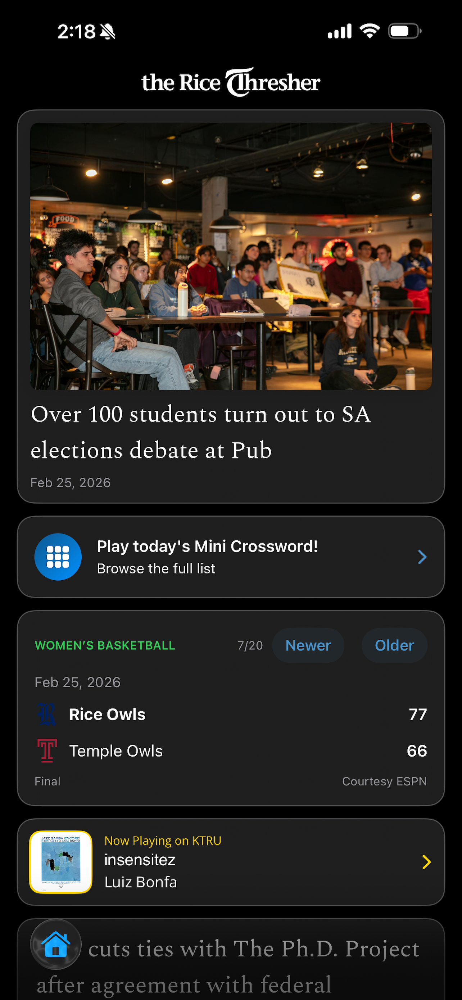
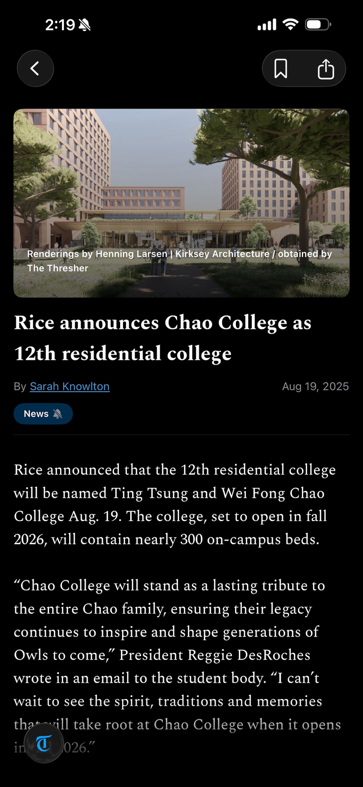
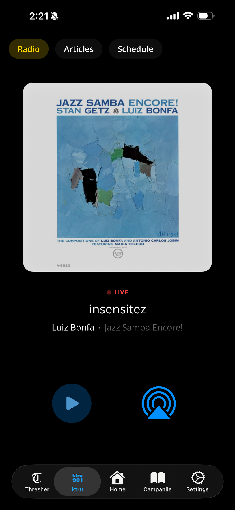
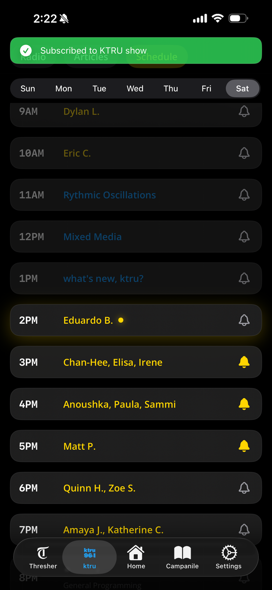
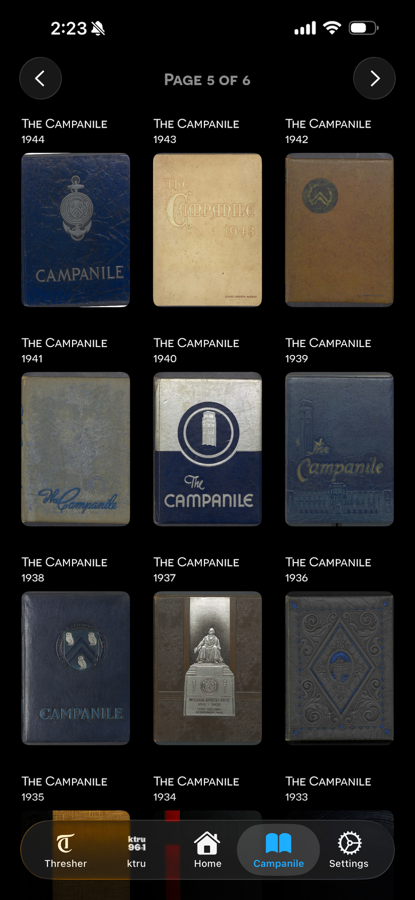
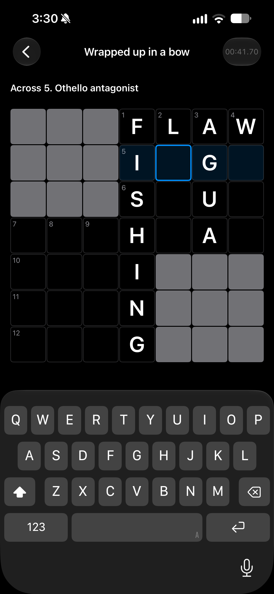
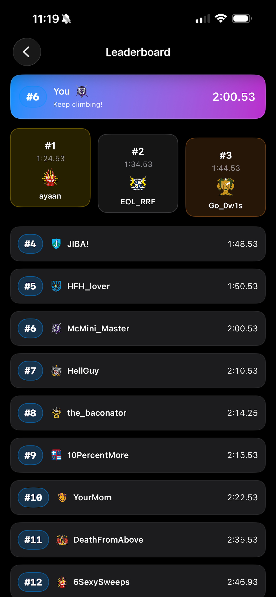

01 / Mobile engineering
Rice Student Media iOS App
See it in action
A tour of Rice Student Media.
Watch the app in use, then explore the features and engineering below.
I started building a news app to give The Thresher more control over its online experience. I then expanded it to include KTRU radio and the Campanile yearbook, hoping to help students discover their peers’ work and connect more deeply with Rice’s culture and history. I built the iOS app and its AWS infrastructure from scratch, bringing reporting, music, games, and campus archives into one place.
Product proposal, iOS development,
backend infrastructure, release
Swift · SwiftUI · AWS
Explore all five app sectionsScreenshots, features, and engineering decisions
Home
A starting point for campus life.
Catch the top story, open a game, check Rice sports scores, or explore newspaper front pages from the same week decades earlier.
Behind the feature
I put sports coverage and endpoint addresses in a remotely editable file so they can change without an App Store release. For the newspaper archive, I normalized inconsistent dates across decades of library records to surface “this week in history.”

The Thresher
Read the news. Follow what matters to you.
Read and save articles, follow topics and individual authors, and receive notifications when they publish new stories.
Behind the feature
I built a rendering pipeline that separates article text from photos, galleries, and embeds, then reconstructs them as native views with small web views where needed. Parsing runs off the main thread to keep the interface responsive. Text respects the reader’s size settings, and saved articles retain their full body for offline reading.

KTRU
Listen live and keep up with your favorite shows.
Stream student radio, read KTRU articles and reviews, and subscribe to reminders when selected shows are about to begin.
Behind the feature
I detect stalled audio, rebuild the stream, and retry with increasing delays when the connection drops. Playback handles phone-call interruptions and pauses when headphones disconnect. The schedule is parsed from KTRU’s existing WordPress table, so staff keep using the publishing workflow they already know.


The Campanile
More than a century of Rice history.
Browse over 100 years of yearbooks, open a volume, and search within its PDF to explore campus life across generations.
Behind the feature
I used Apple’s PDFKit for reading and in-document search. I also wrote Python compression scripts and tested several settings to balance download time with the readability of older scans.

Games & Mini Crossword
Puzzles made by Rice students, for Rice students.
Solve the student-authored mini crossword, return to an unfinished puzzle, and compare your time on the leaderboard.
Behind the feature
I precompute word and clue lookups and bridge UIKit input into SwiftUI to handle individual letters and backspaces precisely. Progress and elapsed time persist when the app backgrounds. Offline submissions stay in local queues and retry later, preserving completed solves through a lost connection.


System architecture
One native app, nine upstream data sources.
I separated SwiftUI views, view models, and typed networking services so each feature could share the same infrastructure. The app combines existing editorial feeds with an AWS backend I built for app-specific functionality.
Existing content
Newspaper API · WordPress
Library archives · Live radio
Sports · Artwork · Spreadsheets
My AWS backend
API Gateway → Lambda → DynamoDB
S3: puzzles and remote configuration
Lambda → Apple Push Notifications → AppOn-device storage
Saved articles · Puzzle progress
Pending submissions · Credentials
Built for a student newsroom. Serverless services handle requests without a continuously running server to maintain. WordPress pages, published spreadsheets, and library archives remain the source of truth for existing content.
Prepared for releases and measurement. Separate development, testing, and production configurations isolate changes. I instrumented 19 event types, including game completion, subscriptions, and audio playback, to give editors visibility into how features are used.
Engineering detailsArticle rendering, crossword input, and API compatibility
Reconstructing articles for native reading
SwiftSoup extracts media blocks and replaces them with markers. I convert the remaining HTML to attributed text, then reassemble text and media in their original order. Typography scales through UIFontMetrics, combining the app’s reading preference with system Dynamic Type. Only embeds that need browser rendering use WKWebView.
Getting crossword input right
I wrapped a custom UITextField in UIViewRepresentable to capture letters and backspaces, including deletion from an empty cell. Precomputed cell-to-word maps avoid scanning the whole grid on each keystroke. Elapsed time comes from timestamps rather than accumulated timer ticks, and the puzzle pauses when the app backgrounds.
Releasing the app and backend independently
App Store releases and backend deployments run on different schedules. I made the decoder accept both flat and proxy-wrapped API responses, plus alternate key layouts, so those supported changes do not require a simultaneous app update. Sports configuration can also change remotely without shipping a new binary.